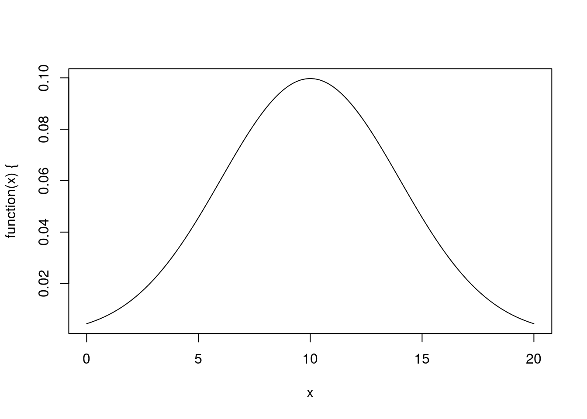
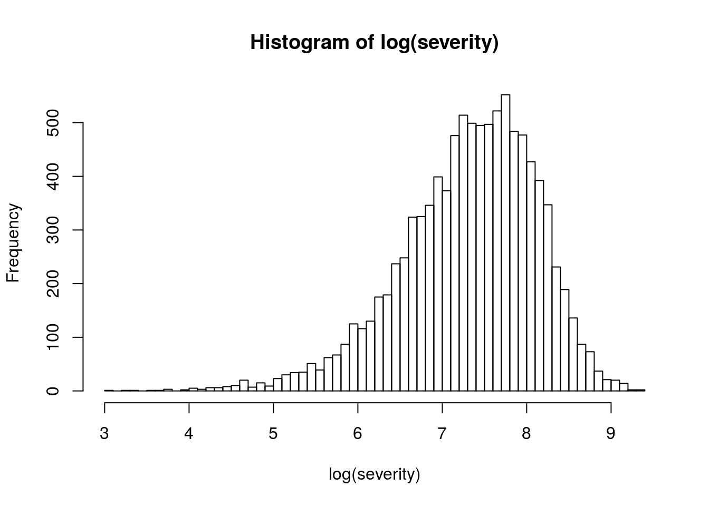
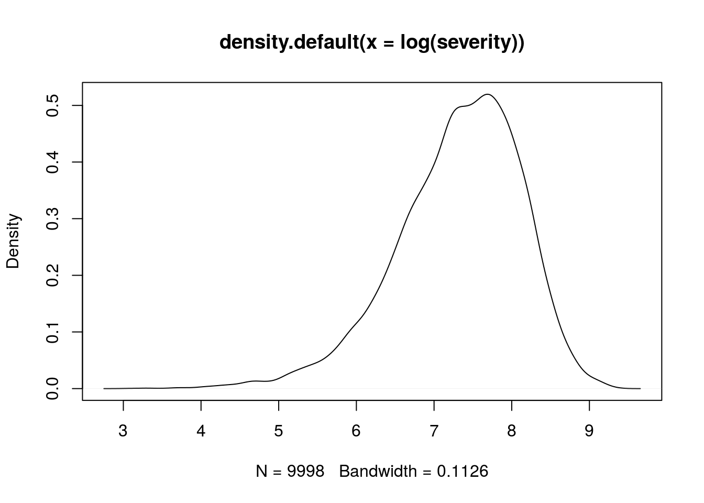
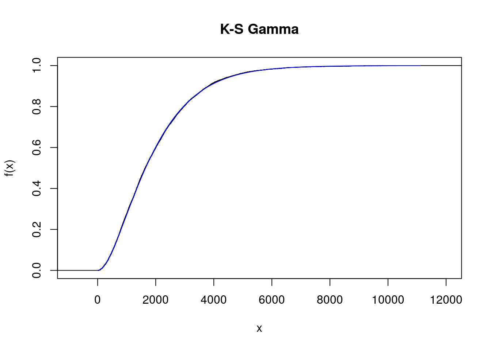
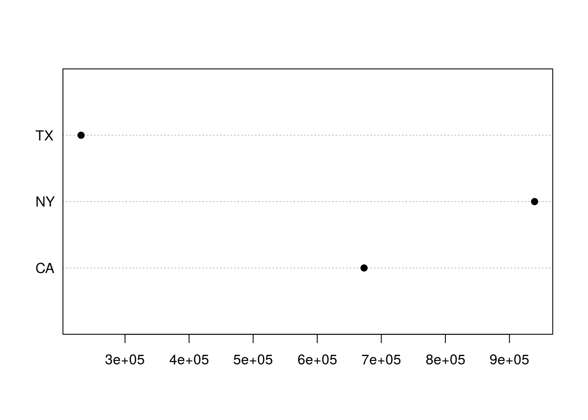

8 Loss Distributions
By the end of this chapter, you will know the following:
- Simulation with
basefunctions - How to perform basic visualization of loss data
- How to fit a loss distributions
- Goodness of fit
8.1 Packages we’ll use
MASS(MASS = Modern Applied Statistics in S)fitdistrwill fit a distribution to a loss distribution function
actuaremmcalculates empirical momentslevlimited expected valuecoveragemodifies a loss distribution for coverage elements- Contains many more distributions than are found in
baseR such as Burr, Pareto, etc. Basically, anything in “Loss Models” is likely to be found here. - Contains the dental claims data from “Loss Models”
- Direct optimization
optimfunction
8.1.1 Statistical distributions in R
Function names are one of ‘d’, ‘p’, ‘q’, ‘r’ + function name
- d - probability density
- p - cumulative distribution function
- q - quantiles
- r - random number generator
8.1.2 Examples
mu <- 10000
CV <- 0.30
sd <- mu * CV
x <- seq(mu - sd*3, mu + sd * 3, length.out = 20)
p <- seq(.05, .95, by = .05)
dnorm(x, mu, sd)## [1] 1.477283e-06 3.624482e-06 8.048577e-06 1.617645e-05 2.942646e-05
## [6] 4.844888e-05 7.219719e-05 9.737506e-05 1.188683e-04 1.313334e-04
## [11] 1.313334e-04 1.188683e-04 9.737506e-05 7.219719e-05 4.844888e-05
## [16] 2.942646e-05 1.617645e-05 8.048577e-06 3.624482e-06 1.477283e-06pnorm(x, mu, sd)## [1] 0.001349898 0.003635066 0.008932096 0.020054161 0.041207522
## [6] 0.077650730 0.134522788 0.214917602 0.317862557 0.437269873
## [11] 0.562730127 0.682137443 0.785082398 0.865477212 0.922349270
## [16] 0.958792478 0.979945839 0.991067904 0.996364934 0.998650102qnorm(p, mu, sd)## [1] 5065.439 6155.345 6890.700 7475.136 7976.531 8426.798 8844.039
## [8] 9239.959 9623.016 10000.000 10376.984 10760.041 11155.961 11573.202
## [15] 12023.469 12524.864 13109.300 13844.655 14934.561rnorm(10, mu, sd)## [1] 11243.571 8575.845 10197.980 8492.567 7522.004 10500.968 7311.206
## [8] 10504.556 11064.905 9843.685dlnorm(x, log(mu), log(sd))## [1] 4.780950e-05 2.505870e-05 1.700824e-05 1.287673e-05 1.035979e-05
## [6] 8.664742e-06 7.445171e-06 6.525483e-06 5.807122e-06 5.230481e-06
## [11] 4.757380e-06 4.362230e-06 4.027237e-06 3.739640e-06 3.490050e-06
## [16] 3.271406e-06 3.078292e-06 2.906489e-06 2.752656e-06 2.614119e-06plnorm(x, log(mu), log(sd))## [1] 0.3868287 0.4190398 0.4384745 0.4524493 0.4633699 0.4723339 0.4799359
## [8] 0.4865345 0.4923631 0.4975820 0.5023061 0.5066205 0.5105903 0.5142660
## [15] 0.5176879 0.5208885 0.5238944 0.5267278 0.5294071 0.5319482plot(function(x) {dnorm(x, 10, 4)}, 0, 20)
8.1.3 Generate some loss data
set.seed(8910)
years <- 2001:2010
frequency <- 1000
N <- rpois(length(years), frequency)
sevShape <- 2
sevScale <- 1000
severity <- rgamma(sum(N), sevShape, scale = sevScale)
summary(severity)## Min. 1st Qu. Median Mean 3rd Qu. Max.
## 21.93 928.90 1640.00 1970.00 2676.00 11130.008.1.4 Histograms
hist(severity)
hist(severity, breaks = 50)
hist(log(severity), breaks = 50)
8.1.5 Density
The kernel density is effectively a smoothed histogram.
plot(density(severity))
plot(density(log(severity)))
8.1.6 fitdistr
library(MASS)
fitGamma <- fitdistr(severity, "gamma")
fitLognormal <- fitdistr(severity, "lognormal")
fitWeibull <- fitdistr(severity, "Weibull")## Warning in densfun(x, parm[1], parm[2], ...): NaNs produced
## Warning in densfun(x, parm[1], parm[2], ...): NaNs produced
## Warning in densfun(x, parm[1], parm[2], ...): NaNs producedfitGamma## shape rate
## 1.981942e+00 1.006292e-03
## (1.261418e-02) (8.096328e-07)fitLognormal## meanlog sdlog
## 7.312554108 0.804493446
## (0.008045739) (0.005689197)fitWeibull## shape scale
## 1.472049e+00 2.184117e+03
## (1.117737e-02) (1.566082e+01)8.1.7 q-q plot
probabilities = (1:(sum(N)))/(sum(N)+1)
weibullQ <- qweibull(probabilities, coef(fitWeibull)[1], coef(fitWeibull)[2])
lnQ <- qlnorm(probabilities, coef(fitLognormal)[1], coef(fitLognormal)[2])
gammaQ <- qgamma(probabilities, coef(fitGamma)[1], coef(fitGamma)[2])
sortedSeverity <- sort(severity)
oldPar <- par(mfrow = c(1,3))
plot(sort(weibullQ), sortedSeverity, xlab = 'Theoretical Quantiles', ylab = 'Sample Quantiles', pch=19, main = "Weibull Fit")
abline(0,1)
plot(sort(lnQ), sortedSeverity, xlab = 'Theoretical Quantiles', ylab = 'Sample Quantiles', pch=19, main = "Lognormal Fit")
abline(0,1)
plot(sort(gammaQ), sortedSeverity, xlab = 'Theoretical Quantiles', ylab = 'Sample Quantiles', pch=19, main = "Gamma Fit")
abline(0,1)
par(oldPar)8.1.8 Compare fit to histogram
sampleLogMean <- fitLognormal$estimate[1]
sampleLogSd <- fitLognormal$estimate[2]
sampleShape <- fitGamma$estimate[1]
sampleRate <- fitGamma$estimate[2]
sampleShapeW <- fitWeibull$estimate[1]
sampleScaleW <- fitWeibull$estimate[2]
x <- seq(0, max(severity), length.out=500)
yLN <- dlnorm(x, sampleLogMean, sampleLogSd)
yGamma <- dgamma(x, sampleShape, sampleRate)
yWeibull <- dweibull(x, sampleShapeW, sampleScaleW)
hist(severity, freq=FALSE, ylim=range(yLN, yGamma))
lines(x, yLN, col="blue")
lines(x, yGamma, col="red")
lines(x, yWeibull, col="green")
8.1.9 Kolmogorov-Smirnov
The Kolmogorov-Smirnov test measures the distance between an sample distribution and a candidate loss distribution. More formal than q-q plots.
sampleCumul <- seq(1, length(severity)) / length(severity)
stepSample <- stepfun(sortedSeverity, c(0, sampleCumul), f = 0)
yGamma <- pgamma(sortedSeverity, sampleShape, sampleRate)
yWeibull <- pweibull(sortedSeverity, sampleShapeW, sampleScaleW)
yLN <- plnorm(sortedSeverity, sampleLogMean, sampleLogSd)
plot(stepSample, col="black", main = "K-S Gamma")
lines(sortedSeverity, yGamma, col = "blue")
plot(stepSample, col="black", main = "K-S Weibull")
lines(sortedSeverity, yWeibull, col = "blue")
plot(stepSample, col="black", main = "K-S Lognormal")
lines(sortedSeverity, yLN, col = "blue")
8.1.10 More K-S
A low value for D indicates that the selected curve is fairly close to our data. The p-value indicates the chance that D was produced by the null hypothesis.
testGamma <- ks.test(severity, "pgamma", sampleShape, sampleRate)
testLN <- ks.test(severity, "plnorm", sampleLogMean, sampleLogSd)
testWeibull <- ks.test(severity, "pweibull", sampleShapeW, sampleScaleW)
testGamma##
## One-sample Kolmogorov-Smirnov test
##
## data: severity
## D = 0.0066186, p-value = 0.7735
## alternative hypothesis: two-sidedtestLN##
## One-sample Kolmogorov-Smirnov test
##
## data: severity
## D = 0.047763, p-value < 2.2e-16
## alternative hypothesis: two-sidedtestWeibull##
## One-sample Kolmogorov-Smirnov test
##
## data: severity
## D = 0.02053, p-value = 0.0004373
## alternative hypothesis: two-sided8.1.11 Direct optimization
The optim function will optimize a function. Works very similar to the Solver algorithm in Excel. optim takes a function as an argument, so let’s create a function.
quadraticFun <- function(a, b, c){
function(x) a*x^2 + b*x + c
}
myQuad <- quadraticFun(a=4, b=-3, c=3)
plot(myQuad, -10, 10)
8.1.12 Direct optimization
8 is our initial guess. A good initial guess will speed up conversion.
myResult <- optim(8, myQuad)## Warning in optim(8, myQuad): one-dimensional optimization by Nelder-Mead is unreliable:
## use "Brent" or optimize() directlymyResult## $par
## [1] 0.4
##
## $value
## [1] 2.44
##
## $counts
## function gradient
## 20 NA
##
## $convergence
## [1] 0
##
## $message
## NULL8.2 Direct optimization
Default is to minimize. Set the parameter fnscale to something negative to convert to a maximization problem.
myOtherQuad <- quadraticFun(-6, 20, -5)
plot(myOtherQuad, -10, 10)
myResult <- optim(8, myOtherQuad)## Warning in optim(8, myOtherQuad): one-dimensional optimization by Nelder-Mead is unreliable:
## use "Brent" or optimize() directlymyResult <- optim(8, myOtherQuad, control = list(fnscale=-1))## Warning in optim(8, myOtherQuad, control = list(fnscale = -1)): one-dimensional optimization by Nelder-Mead is unreliable:
## use "Brent" or optimize() directly8.2.1 Direct optimization
Direct optimization allows us to create another objective function to maximize, or work with loss distributions for which there isn’t yet support in a package like actuar. May be used for general purpose optimization problems, e.g. maximize rate of return for various capital allocation methods.
Note that optimization is a general, solved problem. Things like the simplex method already have package solutions in R. You don’t need to reinvent the wheel!
8.3 Exercises
- Plot a lognormal distribution with a mean of $10,000 and a CV of 30%.
- For that distribution, what is the probability of seeing a claim greater than $100,000?
- Generate 100 and 1,000 observations from that distribution.
- Draw a histogram for each sample.
- What are the mean, standard deviation and CV of each sample?
- Convince yourself that the sample data were not produced by a Weibull distribution.
- Assuming that losses are Poisson distributed, with expected value of 200, estimate the aggregate loss distribution.
- What is the cost of a $50,000 xs $50,000 layer of reinsurance?
8.3.1 Answers
severity <- 10000
CV <- .3
sigma <- sqrt(log(1 + CV^2))
mu <- log(severity) - sigma^2/2
plot(function(x) dlnorm(x), mu, sigma, ylab="LN f(x)")